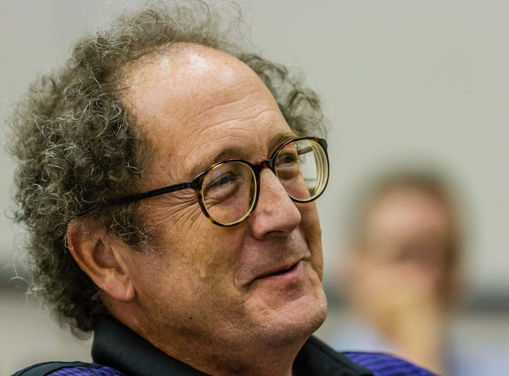

Walter Sinnott-Armstrong is Stillman Professor of Practical Ethics at Duke University in the Philosophy Department, the Kenan Institute for Ethics, the Duke Institute for Brain Science, and the Law School. He publishes widely in ethics, moral psychology and neuroscience, philosophy of law, epistemology, informal logic, and philosophy of religion.

Lok is a PhD candidate in philosophy who is interested in the intersection between philosophy and data science. He's currently researching on the influence of philosophical pragmatism on the development of subjective probability.

Anika is an undergraduate junior at Duke. She is studying Computer Science and Neuroscience - pursuing a major called "Minds and Machines". She is one of the lead web developers and is a part of the kidney exchange study.

Kenzie Doyle is a Post-Baccalaureate research associate and the manager for the Moral AI Lab. She graduated from Grinnell College in 2015 with a B.A. in Psychology. Her interests include interpretations of and environmental impacts on subjective experience, neuroaesthetics, psychometrics, and self-regulation.

Nikhil is an undergraduate sophomore studying Computer Science and Mathematics. His main research interests lie in Deep Learning and Computer Vision.

Vincent Conitzer is a Kimberly J. Jenkins University Professor of New Technologies and Professor of Computer Science, Professor of Economics, and Professor of Philosophy at Duke University. He received the IJCAI Computers and Thought Award, the main AI award for a researcher under 35, as well as a Presidential Early Career Award for Scientists and Engineers.

Cassi is finishing her Ph.D. in Computer Science at Duke and plans to attend law school next fall in order to pursue a career in tech law and policy. Currently, she is exploring ethical tech as a fellow at the Duke Center on Law & Technology and through participation in the Bass Connections Moral AI and Adaptive Regulations groups. Her thesis work is in computer vision and AI, exploring the classification of activities that involve patterns of hand motion and manipulation. Cassi graduated from Duke in 2011 with a B.S. in Public Policy and Computer Science.

Sarah Cogan is a junior from New York majoring in Computer Science and minoring in Philosophy. As a co-president of Duke's effective altruism chapter "EA: Duke," Sarah grew interested in artificial intelligence after learning about AI safety concerns prevalent in the effective altruism community. Sarah is eager to work with this Bass Connections team to combine her two interests in computer science and ethics.

Yuan is currently a third-year Ph.D. student in Computer Science at Duke University, advised by Vincent Conitzer. He is broadly interested in theoretical computer science, especially algorithmic game theory and machine learning.